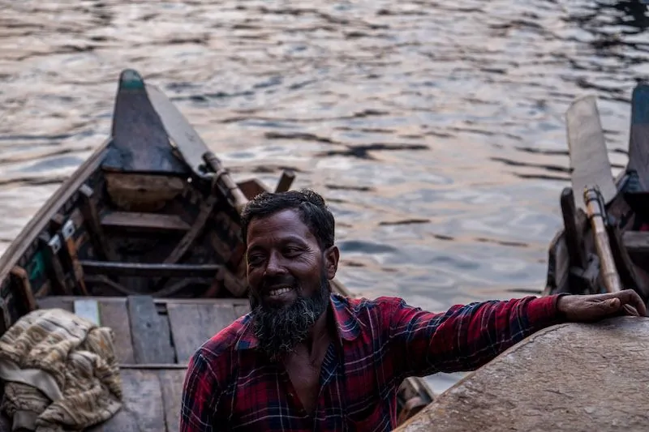
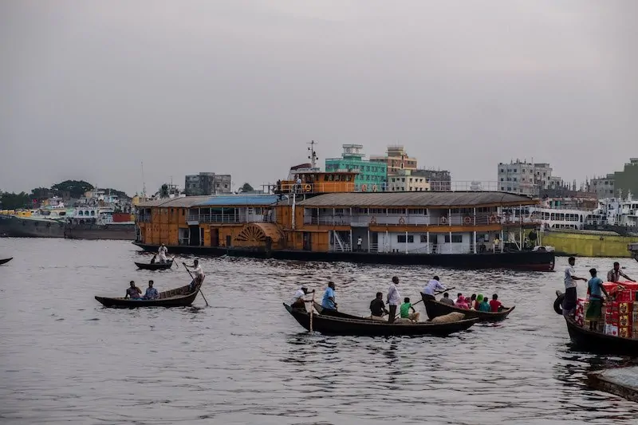
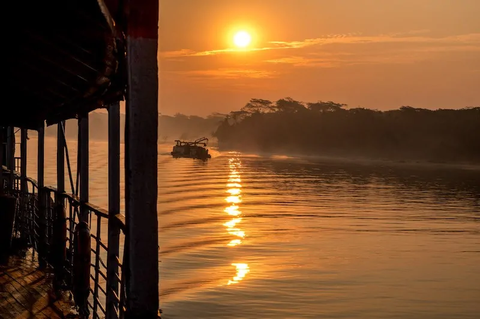
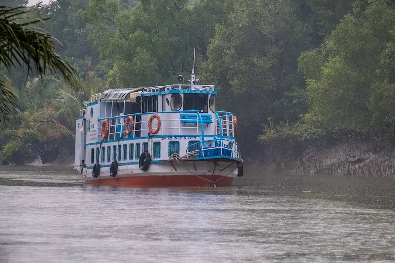
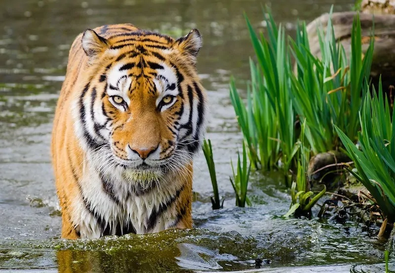

Punting down narrow, muddy creeks, as the sun rose in the background, our eyes were peeled. Watching for any sign of movement or a noise that was different from the muted splosh of water around the boat, or the tweeting kingfishers. As we watched the dense jungle, we wondered.. do we actually want to see a tiger? Could it jump onto our tiny boat from shore or from the water?
The journey south began in Dhaka, on the banks of the (very black) Buriganga river. Waiting for the Rocket Paddlesteamer to dock, I walked up and down the crowded and bustling ferry terminal (Sadarghat), soaking up the competitive cries of Launch (long distance ferry) operators vying for business on popular routes.
The Rocket (there are actually six of them) was built in Calcutta in 1929 with parts from Scotland. Once the fastest ship to ply Bangladesh’s famous waterways, now they are one of the slowest ways to travel. But for many tourists, that’s part of the charm. Taking the opportunity to slow down and enjoy a spot of slow travel on the Rocket was one of the highlights of my Bangladesh trip. The Rockets also have a better safety record than regular Launches (ferries) – as we pulled out of Sadarghat against a blushing sunset sky, we saw the Launches racing each other, cutting one another up in the water in a jostle for poll position, while we chugged steadily along behind.
Together with my group for my Sundarbans boat tour, I was on the MS Ostrich (considered the best Rocket, apparently) and in a first class cabin. It wasn’t quite a luxurious experience (there are no attached bathrooms and cabins are basic, but clean,) but the journey was very comfortable. Cabins lead off the communal first class dining area and there’s a tangible air of nostalgia and old world glamour. A butler in a white coat is available for G&T orders, while dinner is prepared (we were recommended to stay with the Bangladeshi food vs the overpriced western efforts). Tipping your butler and the guys who kindly escort you to the washrooms is a nice thing to do.
I slept soundly in my twin cabin (I had had to buy two berths to avoid being paired up with an unknown (possibly male) traveller), lulled to sleep by the slow rhythm of the boat’s engine. I woke up and lazily debated the effort of getting up in time to watch the sunrise. I was glad I did. As we pulled out of Barisal, the sky turned orange, and never-ending riverscapes dotted with small jetties and villages floated past.
Although the Rocket goes directly to Mongla – our starting point for our Sundarbans boat tour – we disembarked at Hularhat. This saves nearly a whole day on the Rocket, which has to meander along with the river, and transferred to travel by road by Mongla. This is the route most take as it allows time to stop at the 60 Dome Mosque of Bagerhat on the way. Mongla and Hularhat are well connected by bus, if you don’t have pre-arranged transport.
To visit the sundarbans on a live-aboard boat, you have to take a Sundarbans package tour – independent travel is not allowed. This is what the vast majority of travellers coming to the Sundarbans do, and there are a huge range of operators and choices when it comes to choosing a travel agent. Quality of boat and tour varies a lot. Always ask for photos of the boat you’ll be going on and check for life jackets while boarding.
For your best chances of seeing a tiger (which are very low) then you need to spend weeks on a boat going to remote parts of the Sundarbans – a trip of 3 days is unlikely to cut it. After all, s.tretching over 10,000 square kilometres the Sundarbans is the largest mangrove forest in the world.
I travelled with Bangladesh Expeditions (I was impressed by the rural, responsible tourism projects they were running in the Meghna River Delta outside of Dhaka) and would recommend them. Mamun (the owner) is friendly and responded quickly to my array of questions! My Sundarbans tour package was for three days and two nights on the boat. Our boat left from Mongla, which is the closest jumping off point for the Sundarbans.
Unfortunately, the weather didn’t play ball for my trip. The Sundarbans is always extremely humid (after all it’s a tropical mangrove forest), but it usually rains much less during winter. During monsoon (June – October) Sundarbans trips are not advisable or usually available. However during my 3 days in December on the boat, it rained for about 80% of the time. Which put a literal dampner on the experience.
Soggy and wet we rambled around the boat, and stopped for short forays on to shore via small boat (where permissible). Each time, we emerged without having seen much – the wildlife, like us, seemed to be sheltering from the rain. Although over our three days we saw beautiful kingfishers, monkeys, spotted deer, wild pigs and (in the distance) a crocodile lazing on the grey river banks.
The boat trip was a chance to relax and enjoy the naturally quiet and serene surroundings, step away from the phone (there’s no mobile signal away from the towns), read a book, snooze, and share travel stories. I was fortunate enough to travel with not one but two well travelled companions, and I listened to them trade stories about the diciest border crossings they’d been through.
For a country with the number of challenges that Bangladesh has (rapid population growth being one of them), unfortunately conservation hardly makes it to number one priority spot. Corruption is also rife. That means that the duty to protect beautiful areas such as the Sundarbans falls to us as travellers, to ensure that it – and its tigers – are saved for the next generations.
And as for my search for tigers? I didn’t see one. But one may just have seen me…